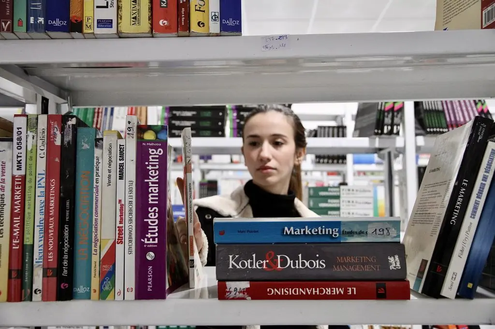
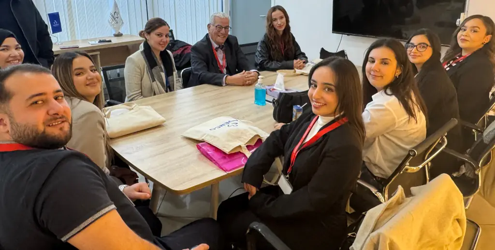
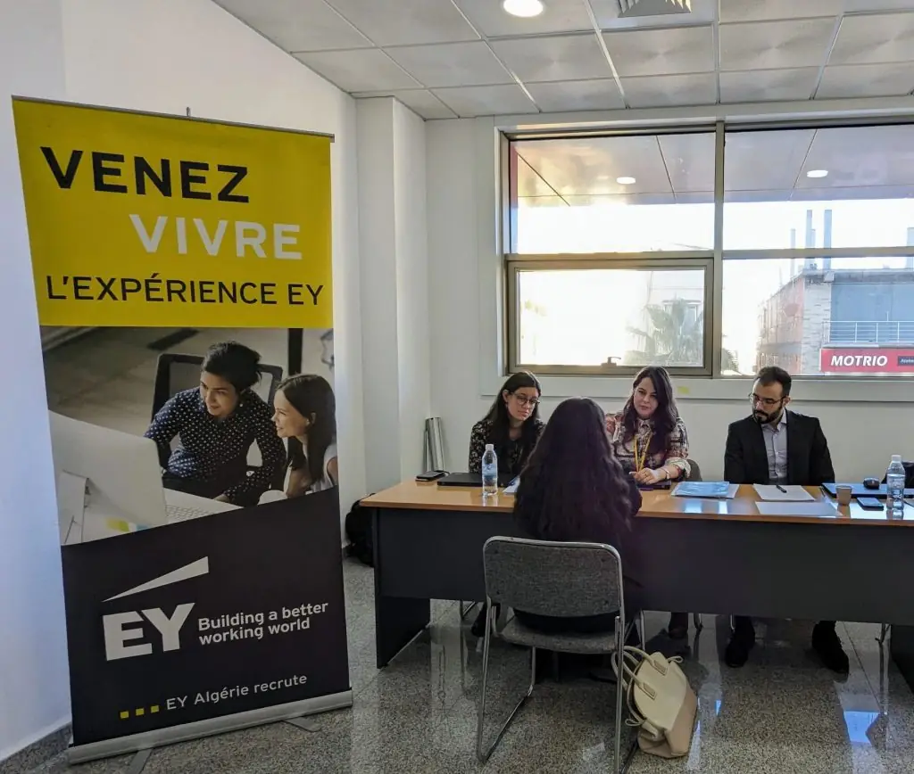
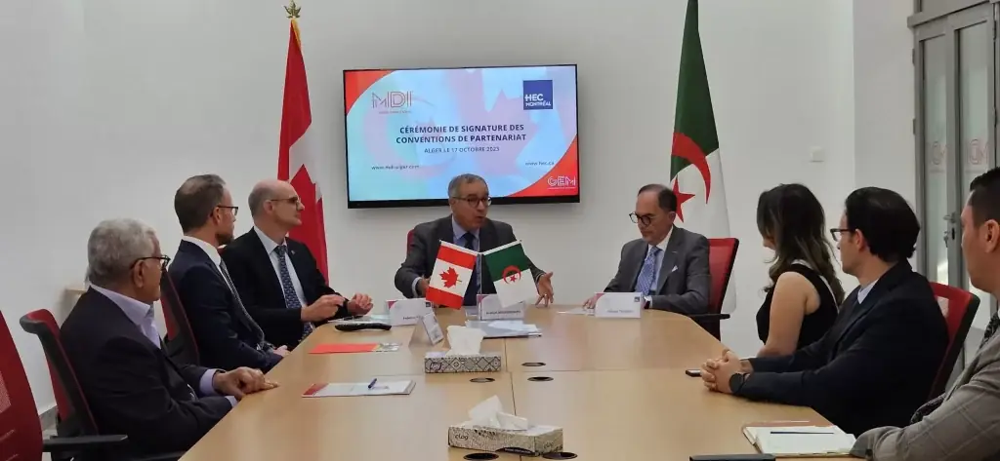
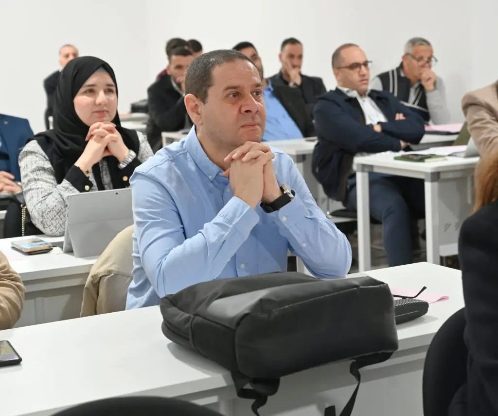

Première école de management privée d’Algérie · depuis 1996
L’excellence, passionnément.
Depuis 1996, MDI Algiers Business School forme à Alger les managers de l’économie algérienne, du Bac au doctorat professionnel, avec des parcours jusqu’à HEC Montréal.

- 22 octobre 2026 — Colloque scientifique national « Made in Algeria et industrialisation »
- Admissions 2027 : demandez un rendez-vous d’orientation
- MDI Excellence Scholarships : trois catégories de bourses lancées pour les 30 ans
- 4 Palmes Eduniversal 2025 · ISO 9001:2015 · agréée MESRS
- 1996 – 2026 : trente ans, passionnément
Trouver sa voie
Dites-nous qui vous êtes.
Après le Bac, quatre Licences en trois ans, dans un établissement agréé par le MESRS, avec stage en entreprise et un concours d’admission sur épreuves écrites et entretien.
- Licence en Management3 ans · Bac+3
- Licence Business Intelligence3 ans · Bac+3
- Licence Informatique & IA3 ans · Bac+3
- Licence Informatique & Sécurité digitale3 ans · Bac+3
Une école privée agréée par le Ministère de l’Enseignement Supérieur et de la Recherche Scientifique, certifiée ISO 9001:2015, 4 Palmes Eduniversal 2025. Les frais et les modalités de paiement vous sont présentés lors d’un rendez-vous d’orientation.
- Frais et boursesjusqu’à 100 % des frais en 2025
- Le diplôme est-il reconnu ?agrément MESRS
- Prêt étudiantAl Salam Bank
- Les questions des parentsFAQ
Cinq Masters en deux ans, ouverts aux diplômés de toutes les universités ; après la première année, le parcours 1+1 mène au D.E.S.S. de HEC Montréal.
- Master en Management2 ans · Bac+5
- Master Comptabilité-Contrôle-Audit2 ans · Bac+5
- Master Marketing Digital & E-Business2 ans · Bac+5
- Master Management Digital & SI2 ans · Bac+5
- Master Logistique Internationale & SCM2 ans · Bac+5
MDI Executive Education forme les cadres et les dirigeants : 20 programmes au catalogue, du doctorat (DBA) et des MBA aux cycles certifiants et aux formations inter et intra-entreprises.
- Doctorate in Business Administration (DBA)36 mois
- MBA International Paris (MBA IP)18 mois
- MBA spécialisés10 programmes
- Cycles certifiants3 programmes
- Formation continue2 programmes
Recruter nos étudiants en stage ou en emploi, former vos cadres, financer une bourse ou intervenir dans nos programmes.
- Recruter nos étudiants et diplômésstages, Job Day
- Former vos cadresinter et intra-entreprises
- Financer un talentbourses d’entreprise
- Co-construire des cas et intervenirpédagogie
En chiffres
Ce que trente ans ont construit.
3 000+
Diplômés
diplômés depuis la création de l’école
87%
Insertion
taux moyen d’insertion trois mois après le diplôme
16
Partenaires
universités et business schools partenaires dans le monde
Chiffres publiés par l’école.





Former ceux qui dirigeront.
Établissement privé agréé par l’État, MDI forme des managers responsables et ouverts sur le monde. On y apprend par les études de cas, les projets en équipe et le stage. Les Masters s’ouvrent sur la leçon d’un dirigeant : le PDG de BMA Algérie en 2024, le CEO de Hamoud Boualem en 2025.
Établissement privé d’enseignement supérieur agréé par le Ministère de l’Enseignement Supérieur et de la Recherche Scientifique.
Un système de management de la qualité certifié ISO 9001:2015 ; nouvelle Politique Qualité publiée en 2026, revue périodiquement.
Distinction « Top Business School » 2025 ; première place du classement en Algérie en 2023 et 2024.
« Ce qui distingue MDI, ce sont les méthodes pédagogiques. L’apprentissage est concentré sur ce qui est directement applicable sur le terrain, en entreprise. C’est ce qui m’a permis d’être rapidement opérationnel. »
Formations
Quatre Licences, cinq Masters, une même exigence.

Licence en Management
LicencesNouveau
Licence Business Intelligence
LicencesNouveauLicence Informatique & IA
LicencesNouveau
Licence Informatique & Sécurité digitale
MastersMaster en Management
Masters
Master Comptabilité-Contrôle-Audit
MastersMaster Marketing Digital & E-Business
MastersNouveauMaster Management Digital & SI
Masters
Master Logistique Internationale & SCM
Toutes les formationsTrente ans
Sept dates qui ont fait l’école.
De la fondation en 1996 au trentième anniversaire : les étapes vérifiables d’une école qui a grandi avec l’économie algérienne.
- 1996
Fondation à Alger
MDI ouvre comme premier établissement privé de formation supérieure en management en Algérie.

- 2018
14e colloque international
En février 2018, le colloque international de MDI pose la question « Développer le potentiel humain en Afrique : quelles compétences pour l’émergence africaine ? ».

- 2021
Parcours avec HEC Montréal
Réunions de coordination des parcours B.A.A. 2+2 et D.E.S.S. 1+1 avec HEC Montréal (10 février et 9 novembre 2021) : treize étudiants recommandés pour poursuivre à Montréal.

- 2023
Première place Eduniversal
MDI prend la tête du classement Eduniversal des écoles de commerce en Algérie, une place conservée en 2024.

- 2024
GEM-Start labellisé
En septembre 2024, l’incubateur de l’école obtient le label officiel « Incubateur » ; il porte les programmes IDÉELAB, BOOSTUP et Entreprendre au féminin.

- 2025
Département Informatique & IA
Trois nouvelles Licences et un Master dédiés au numérique. 4e Palme « Top Business School » au classement Eduniversal.

- 2026
Trente ans
MDI Excellence Scholarships, nouvelle Politique Qualité et colloque national « Made in Algeria et industrialisation ».

International
Commencer à Alger, finir à Montréal.
Avec HEC Montréal, deux parcours diplômants : le Baccalauréat en administration des affaires (deux années à MDI, deux à Montréal) et le D.E.S.S. en administration des affaires (une année à MDI, une à Montréal).
MDI compte aussi parmi ses partenaires académiques Paris 1 Panthéon-Sorbonne, Dauphine-PSL, l’Université du Littoral Côte d’Opale, l’ISCID-CO, CESTE, Nişantaşı, TBS Education et l’IHET Tunisie.

Executive Education
Former les cadres qui transforment leur entreprise.
Filiale de l’école, MDI Executive Education forme les dirigeants et les cadres : 20 programmes au catalogue, du doctorat (DBA) aux MBA, aux cycles certifiants et aux formations inter et intra-entreprises, avec l’Université Paris-Dauphine | PSL, l’IAE Paris Sorbonne, CESTE (Saragosse), HEC Montréal et l’Institut Tunisien des Administrateurs.
Ils ont formé leurs cadres avec MDI
- Sonatrach
- Sonelgaz
- Cevital
- RED-MED
Programmes intra-entreprises Préparation de la relève, Haut Potentiel, Performance et Administrateur de sociétés. Partenaires 2025 : AYRADE (accord-cadre, septembre 2025), Bel Algérie (convention-cadre, novembre 2025).

Le catalogue par famille
- 36 moisDoctoratDoctorate in Business Administration (DBA)
- 18 moisMBA InternationalMBA International Paris (MBA IP)
- 10 programmesMBA spécialisésManagement des entreprises, Achats & Supply Chain et 8 autres
- 3 programmesProgrammes spécialisésBanque – Finance – Assurance, Droit et fiscalité des entreprises et 1 autre · sessions à confirmer
- 3 programmesCycles certifiantsCertificat Administrateur d’Entreprises, Essentials of MBA et 1 autre
- 2 programmesFormation continueFormation inter-entreprises, Formation intra-entreprises
Programmes phares
36 mois · Doctorat
Doctorate in Business Administration
Trois ans pour mettre au moins dix ans d’expérience managériale au service de la recherche appliquée, jusqu’à la soutenance d’une thèse.
Le programme18 mois · MBA International
MBA International Paris
Le diplôme de Paris-Dauphine | PSL et de l’IAE Paris Sorbonne, préparé à Alger en 18 mois à temps partiel.
Le programme6 mois · Cycles certifiants
Certificat Administrateur d’Entreprises
Cinq modules de trois jours, dont le dernier à Tunis, pour former des administrateurs de société avec l’Institut Tunisien des Administrateurs.
Le programmeRecherche et vie étudiante
Une école qui publie et qui fait entreprendre.

Colloque national
22 oct.
Made in Algeria et industrialisation
Chaînes de valeur, transformation digitale et stratégie de marque nationale : le colloque 2026 avec le LARMHO (Université de Tlemcen), au Holiday Inn Algiers – Cheraga Tower.
Appel à communicationRecherche
Revue ManagementS
Une revue scientifique à comité de lecture éditée par MDI, qui éclaire les défis du management contemporain et nourrit les enseignements.
La recherche à MDI
Entrepreneuriat
GEM-Start, l’incubateur
Incubateur labellisé : IDÉELAB, BOOSTUP, Entreprendre au féminin et le Startup-Day pour transformer une idée en entreprise.
L’incubateurVie étudiante
Alumni, bibliothèque, campus
Un réseau de plus de 3 000 diplômés, l’accès à la bibliothèque numérique ScholarVox et un campus à Chéraga où l’on apprend, entreprend et s’engage.
La vie à MDIActualités
Ce qui se passe à MDI.
- Vie académiqueMDI réaffirme son engagement qualité et sa conformité ISO 9001:2015 pour ses 30 ans
- Vie académiqueSoutenances de fin d’études 2026 : les étudiants de Master 2 à l’honneur
- Vie académiqueSoutenances de Licence 3 2026 : une nouvelle étape vers la réussite
- BoursesMDI Excellence Scholarships 2026 : investir dans les leaders de demain
- AdmissionsInscriptions Licence 2026 : rejoignez MDI Algiers Business School

Admissions
Préparez votre rentrée 2027.
Licences après le Bac, Masters après une Licence : un conseiller pédagogique vous reçoit sur rendez-vous au campus de Chéraga et vous remet la grille des frais.